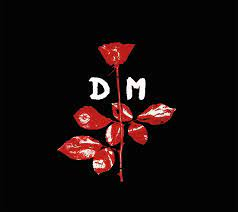
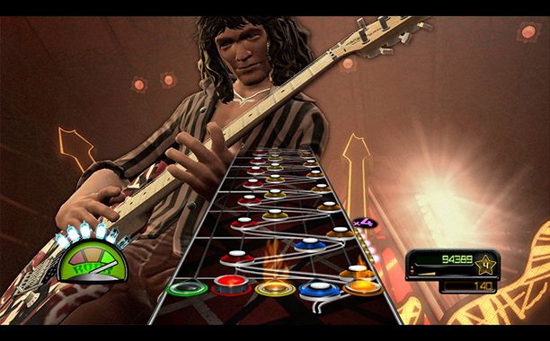
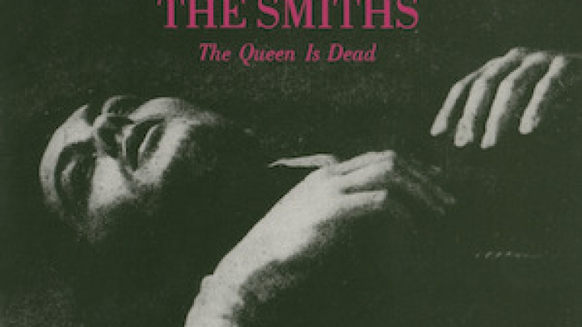
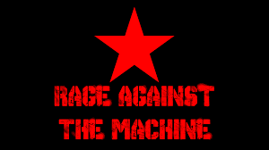
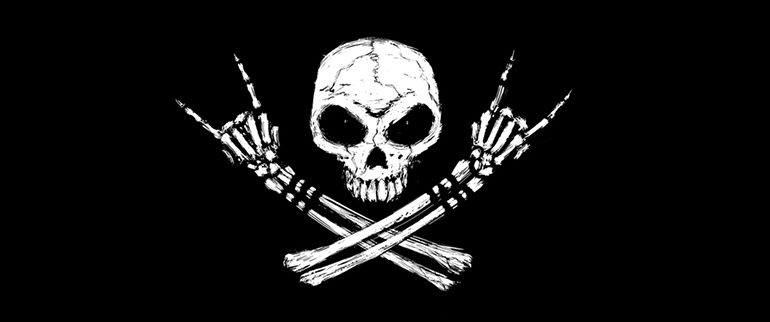

Sobre Mim
 Desde Criança ouvia meu pai ouvindo suas musicas mesmo sem saber quem era a Banda ou seus integrentes até muita vezes sem saber mesmo seu nome, mas estava sempre do lado do rádio ouvindo essas músicas, tanto nacionais quanto internacionais, eu gostava das delas e sempre ouvia pois estava de fundo quase todos os dias, uma dessas bandas que tenho muita afeição é a Depache Mode.
COmprei um video game chamado ps2 com meu dinheiro que juntei por anos de presentes eu tinha 9 anos na época e como era do meu primo ele deu com diversos jogos, em uma centena de jogos um me chamou mais atenção que os outros era o Guitar Hero, um jogo de ritmo em acertar as notas conforme elas passavam no exato momento, com 5 botoões e muito rock tocando de fundo, foi uma paixão a primeira vista só jogava isso o dia inteiro e ouvia as musicas, e assim comecei a ouvir rock de verdade, mas sem conhecer as bandas e só por gostar do som.
 Eu cresci continuei ouvindo bandas entre elas Nirvana, Metallica, Iron Maiden, bandas mais conhecidas e "padrões" no rock, não conhecia sobre os integrantes da bandas nem seus ideais ainda, foi quando conheci um amigo muito importante o Luigi, ele me inseriu no Rock de uma forma que eu não conhecia, me apresentando bandas, histórias, pessoas, lugares, e muito mais que isso fazendo memórias, me fazendo querer viver de novo e conhecer cada vez mais essas experiencias. Descobri ideologias e pessoas que compartilhavam do mesmo pensamento como o pensamento Punk que se baseia em contra cultura, desigualdades sociais, defendia o antiautoritarismo, a liberdade anárquica, a oposição ao consumismo, com o DIY Do It Yourself (Faça você mesmo), com produções independentes contra o consumismo e igualitarismo.
Foi quando em uma saida para um lugar bem sociavel e muitas pessoas com ideologias iguais com o Rock Punk e a banda RATM (Rage Against The Machine), onde meu amigo estava com a blusa da mesma e no meio do lugar tentaram furtar ele e quando ele viu e tentou sair da situação acabou apanhando e a justificativa dos agressores foram: "você está com essa blusa dessa banda com ideais comunistas", isso mudou minha mente e vez eu querer saber cada vez mais sobre as bandas e entender como elas pensam para me adptar e me moldar meus ideais conforme o que eu acredito, pois uma situação dessa é inacreditavel e mudou minha forma de ver o mundo, minha posição politica envolvendo politicas sociais. 
 Algumas bandas que macaram minha vida e merecem ser citadas aqui são : RadioHead, The Smiths, Joy Division, The Cure, The Strokes, Depache Mode, Nirvana, Deftones, Pixies, Blur, Bloc Party, Slipknot, Misfits, R.E.M, Rage Against The Machine, Pink Floyd, Van Hallen, Black Sabath, Metallica, Decalius, Korn, Sonic Youth. Bad Brains

Banned In D.C